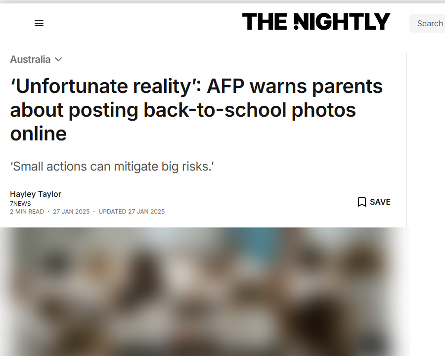
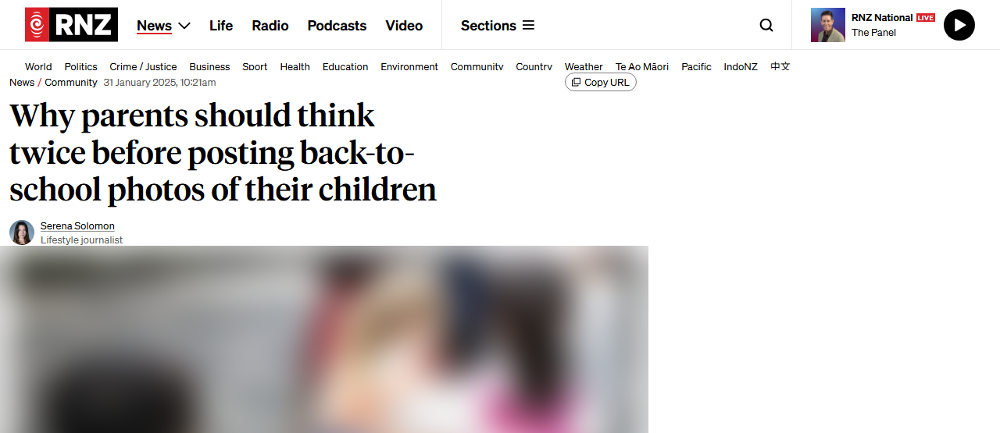

① 부모의 SNS
만 0~11세 자녀 부모 1,000명
86.1%
SNS를 하는 부모 10명 중
8~9명이 아이 사진을 올림
만 0~11세 자녀 부모 1,000명
② 그래서 생긴 말
 노컷뉴스 · 2023.7.15
노컷뉴스 · 2023.7.15

셰어런팅
뉴시스 · 2022.10.9
셰어(share) + 페어런팅(parenting).
부모가 아이 사진 · 영상을 SNS에 올리는 것
③ 사진 속 배경이 위치를 알려 줍니다
국내 · 직접 인터뷰
육아·교육 인플루언서 · 인스타 DM
해외 · 경찰 경고
"밖에서 찍은 영상 배경을 보고 '무슨 동네 사시네요' 같은 댓글이 달렸어요."
호주 연방경찰 · 2025.1.27 · The Nightly

뉴질랜드 경찰 · 2025.1.31 · RNZ
